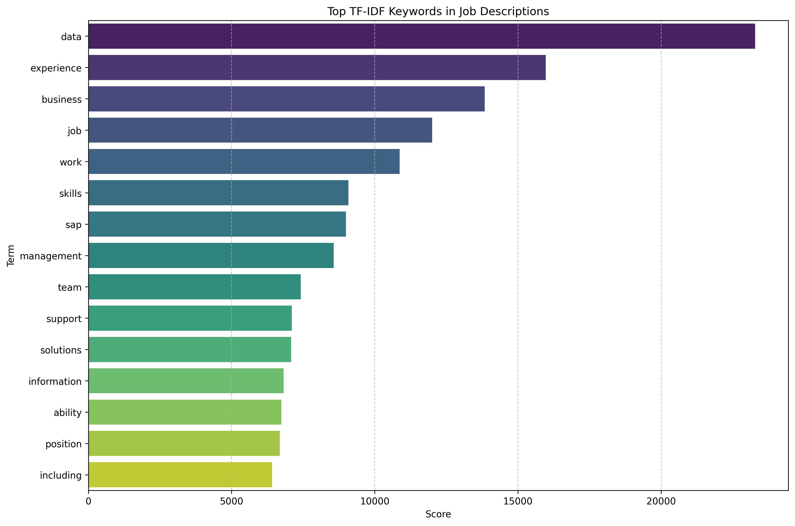
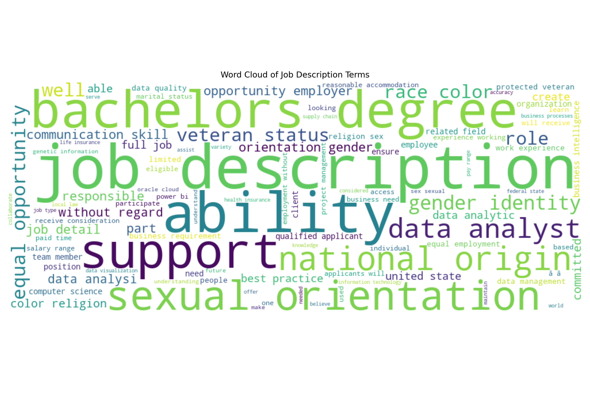

Code
import pandas as pd
import re
from sklearn.feature_extraction.text import TfidfVectorizer
import matplotlib.pyplot as plt
import seaborn as snsThis section uses natural language processing (NLP) to extract insights from job descriptions in the dataset, focusing on the most frequent skills and terms mentioned. We apply TF-IDF to identify distinguishing keywords, and generate a word cloud for intuitive visualization.
tfidf = TfidfVectorizer(max_features=30, stop_words="english")
tfidf_matrix = tfidf.fit_transform(job_desc_clean)
feature_names = tfidf.get_feature_names_out()
scores = tfidf_matrix.sum(axis=0).A1
tfidf_df = pd.DataFrame({"Term": feature_names, "Score": scores})
tfidf_df = tfidf_df.sort_values(by="Score", ascending=False)
tfidf_df.head(10)plt.figure(figsize=(12, 8))
sns.barplot(data=tfidf_df.head(15), x="Score", y="Term", palette="viridis")
plt.title("Top TF-IDF Keywords in Job Descriptions")
plt.grid(axis='x', linestyle='--', alpha=0.7)
plt.tight_layout()
plt.savefig("figurestyj/tfidf_keywords.png", dpi=300, bbox_inches='tight')
plt.show()

The results from the TF-IDF analysis reveal that the most distinctive keywords across job postings are “data”, “experience”, “business”, and “job”. These terms highlight the prevalence of data-centric roles in the current job market and underscore the significance of prior professional experience as a hiring criterion. Other frequently weighted terms include “skills”, “management”, and “team”, which indicate that employers are seeking candidates who possess both technical competencies and the ability to collaborate effectively within organizational structures.
In addition to the TF-IDF results, the word cloud visualization further enriches our understanding by emphasizing the recurring presence of phrases such as “bachelors degree”, “data analyst”, “support”, and “ability”. This aligns with expectations that many job postings include educational qualifications and role-specific technical terms. Moreover, the word cloud captures compliance-related language such as “gender identity”, “sexual orientation”, and “national origin”. These terms are commonly found in equal opportunity employment disclosures and reflect widespread adherence to diversity and inclusion standards in job advertisements.
Collectively, the TF-IDF scores and the word cloud suggest several dominant themes within job descriptions. First, there is a consistent emphasis on technical qualifications, including skills in data analysis, cloud platforms, and tools such as Python and SAP. Second, postings frequently reference soft skills such as management, communication, and teamwork. Third, many job ads incorporate legal or standardized phrasing associated with hiring equity and regulatory compliance. Lastly, there is a strong focus on candidates’ educational background and accumulated experience.
These findings provide actionable guidance for job seekers, especially those pursuing roles in AI, tech, or data-related fields. Individuals are encouraged to showcase both technical expertise and interpersonal effectiveness in their resumes. Additionally, familiarity with standardized workplace language and professional communication expectations may enhance alignment with employer requirements.